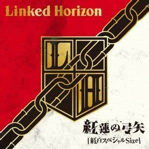
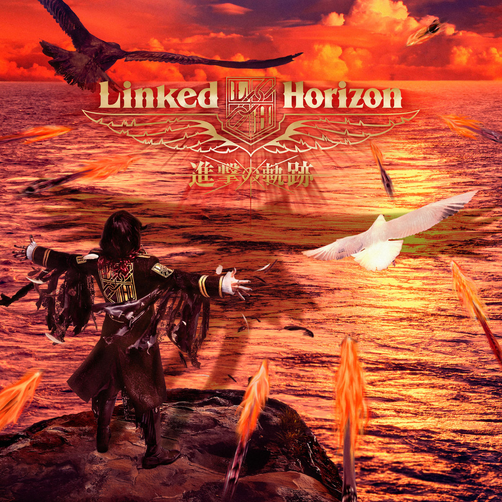
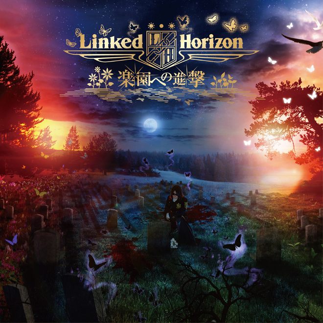
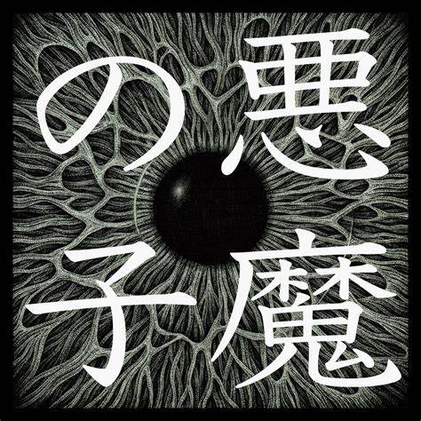

歌手：Linked Horizon
第一季OP
發行年份：2013
歌曲歌詞
を番え追い駈ける標的（やつ）は逃がさない
を放ち追い詰める決して逃がさない
限界まで引き絞る はち切れそうな弦
《標的》（やつ）が息絶えるまで 何度でも放つ
を放ち追い詰める決して逃がさない
限界まで引き絞る はち切れそうな弦
《標的》（やつ）が息絶えるまで 何度でも放つ

歌手：Linked Horizon
第二季OP
發行年份：2017
歌曲歌詞
得体の知れない化け物が 人間（ひと）と似た顔（つら）をしてやがる
この世から一匹残らず 奴らを駆逐してやる
最初に言い出したのは誰か？ そんな事憶えちゃいないが
忘れられない怒りがある 必ず駆逐してやる
この世から一匹残らず 奴らを駆逐してやる
最初に言い出したのは誰か？ そんな事憶えちゃいないが
忘れられない怒りがある 必ず駆逐してやる
歌手：神聖放逐樂隊（神聖かまってちゃん）
最終季OP
發行年份：2021
歌曲歌詞
Angels playing disguised with devil’s faces
Children cling to their coins squeezing out their wisdom
Angels planning disguised with devil’s faces
Children cling on to their very last coins
Children cling to their coins squeezing out their wisdom
Angels planning disguised with devil’s faces
Children cling on to their very last coins

歌手：Linked Horizon
第三季ED
發行年份：2018
歌曲歌詞
立ち位置が変われば 正義は牙を剥く
檻の中で吼えているのは 果たしてどちらか?
心臓を捧げた 戻せない黄昏に
進み続けた夜の果て 楽園は何処にある…
檻の中で吼えているのは 果たしてどちらか?
心臓を捧げた 戻せない黄昏に
進み続けた夜の果て 楽園は何処にある…

歌手：Ai Higuchi（ヒグチアイ）
最終季ED
發行年份：2022
歌曲歌詞
世界は残酷だ それでも君を愛すよ
なにを犠牲にしても それでも君を守るよ
間違いだとしても 疑ったりしない
正しさとは 自分のこと 強く信じることだ
なにを犠牲にしても それでも君を守るよ
間違いだとしても 疑ったりしない
正しさとは 自分のこと 強く信じることだ